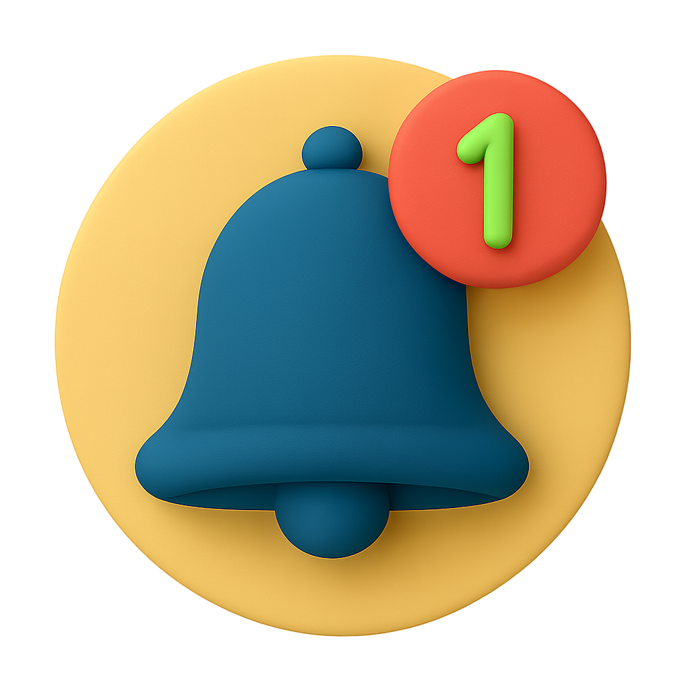
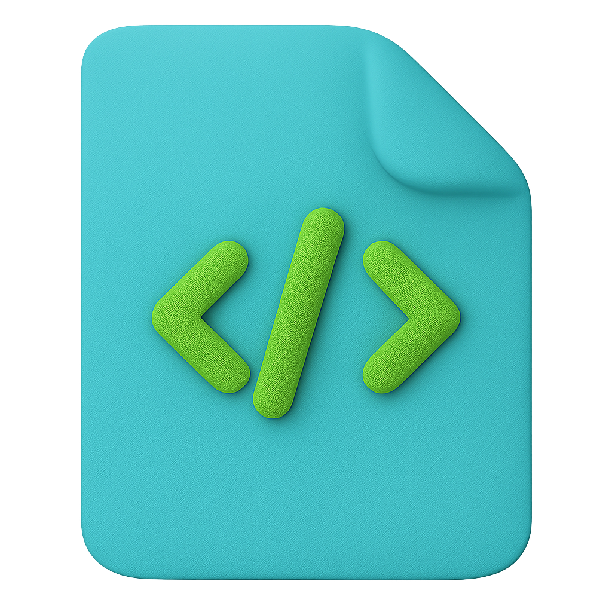
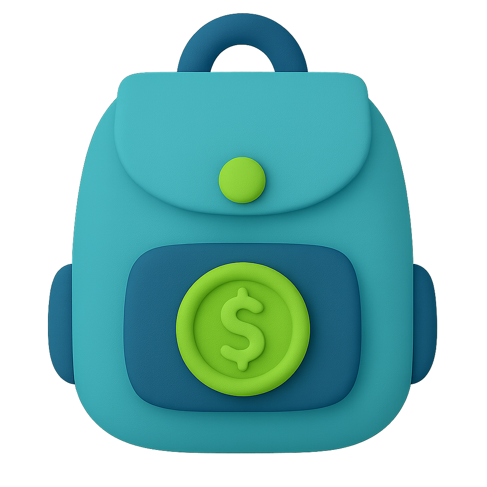

Что умеет TokenTracker
Анализ китов
Трек больших кошельков. Входы, выходы, накопления.
Мониторинг девелопера
Проверка контрактов, свапов, действий разработчика.
Разведка по балансу
Движения холдеров, рост/падение, аномалии.

Локальный AI-анализ
Обработка данных на ПК, без API и логинов. Ядро на базе Genspark LLM.
Аналитика TVL
Изменения ликвидности токенов в реальном времени. Визуальные дашборды.
Telegram мониторинг
Активность в чатах, новые упоминания, реакция комьюнити.

Алёрты по медиа
Всплески упоминаний на Cointelegraph, Reddit, X/Twitter.

Трекинг разработчиков
GitHub, Discord, Notion, изменения смарт-контрактов.

Кастомный портфель
Добавляй токены и кошельки для личного отслеживания активности.